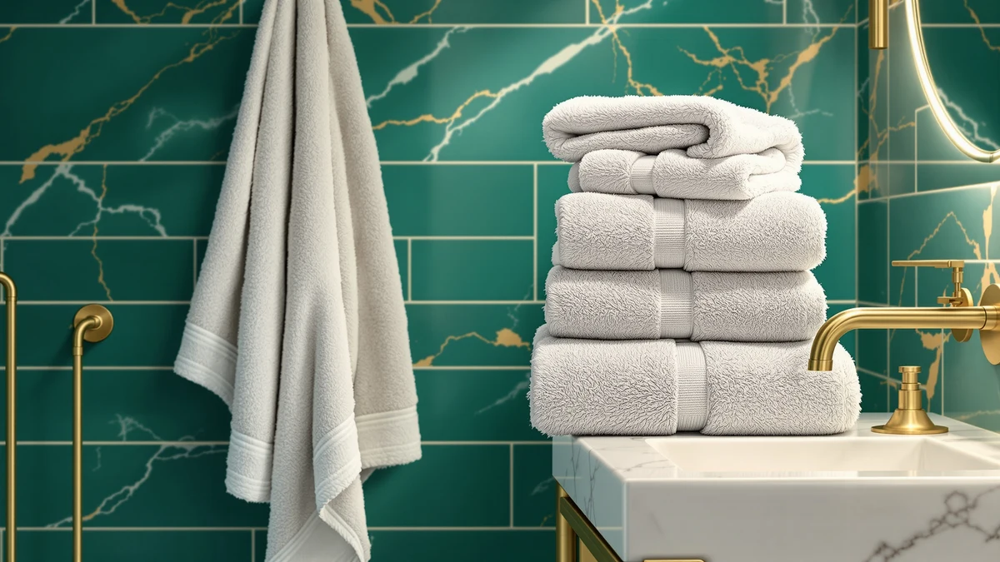

The Best Budget Bath Sheets (2026)
Prices and picks verified as of September 2026. Independent, reader-supported reviews.


Quick Answer
For the best budget bath sheets, you do not need a designer label to get an absorbent, durable towel. The Utopia Towels Luxurious Bath Towels is our overall pick for its cotton-blend absorbency and low per-towel cost, while the $18.39 Amazon Basics 6-Piece set proves a whole household can stay stocked without spending much per towel.
Our pick: Utopia Towels Luxurious Bath Towels, $28.98 Check Price on Amazon
Bottom line: our top pick is the Utopia Towels Luxurious Bath Towels Set at $28.98. The best budget option is the Amazon Basics 6-Piece Fade-Resistant 100% Cotton Towel Set at $18.39.
Things to Know Before You Buy
- "Bath sheet" and "large bath towel" overlap. A true bath sheet runs about 35 by 70 inches. None of these budget bath sheets alternatives hit that exact size, but the American Veteran Towel at 27x54 and the TEXCRAFT at 24x50 come closest.
- Material decides the feel. Six of the seven picks here are 100% cotton, which holds more water and feels plusher than the cotton-blend Utopia Towels top pick, though the blend is what keeps that towel's price down.
- Set size changes the math. Buying a multi-piece set, like the 24-piece LANE LINEN bundle, usually costs less per towel than buying single bath sheets one at a time.
- Price spread is wide. These budget bath sheets alternatives range from $18.39 for the Amazon Basics 6-Piece set to $63.64 for the LANE LINEN bundle, so set count matters as much as the sticker price.
- Brand names repeat for a reason. Utopia Towels appears twice in this guide because both its towels deliver consistent cotton quality at two different price points.
The best budget bath sheets come down to one combination: the right material, the right set size, and a fair per-towel cost, not a premium label. We compared seven cotton and cotton-blend towel sets, all priced well under what a single name-brand bath sheet often costs, to find which ones deliver real absorbency without the markup. None of them are marketed as true oversized bath sheets, but each is large enough, or sold in a big enough set, to fill that role in a budget bathroom.
Our top pick is the Utopia Towels Luxurious Bath Towels at $28.98. Its cotton-blend construction and large sizing make it the best all-around value here, and it costs less than most of the other sets in this guide despite being sold individually rather than in bulk. If you want a matching set instead of single towels, the White Classic Luxury Light Blue 8-piece set at $39.99 is the strongest runner-up.
This guide also covers multi-piece bundles for households that go through towels fast, an oversized single towel for anyone chasing true bath-sheet coverage, and the cheapest per-towel option for a tight budget. You will find what each set does well, where it falls short on size or material, and which shopper it fits best.
Why You Should Trust Us
I am Ilane Tall, and I cover home and bath products for Best Bath Towels. I compare products against the same checklist of material, set size, and price rather than against marketing copy, and my goal with this guide to the best budget bath sheets is simple: tell you which low-cost towel sets deliver real cotton quality and which ones cut corners you will notice.
We source the products we cover and earn a commission if you purchase through our links, which never changes where a set lands in our ranking. When a pick has a real limitation, like a cotton blend instead of full cotton or a size that falls short of a true bath sheet, we say so directly. You can read more about our method on our how we research page.
How We Picked
We started by pulling budget-priced towel and sheet sets that stay well under the cost of a single premium bath sheet, then narrowed the field to sets with a clear material listed, either 100% cotton or a named cotton blend, so shoppers know exactly what they are buying. To build a useful lineup of the best budget bath sheets, we wanted a spread of set sizes: single oversized towels, small six-packs, and large multi-piece bundles.
From there we weighed four things: material quality relative to price, per-towel cost within a set, size relative to a true bath sheet, and whether the brand has a track record of consistent cotton construction across its other products. Sets that looked cheap on the sticker price but broke down to a high per-towel cost dropped down the list. The seven that made the cut each earn their spot for a specific budget or household size rather than for a low headline price alone.
How We Compared
We compared each of these budget bath sheets alternatives on the same terms: listed material, dimensions, set count, and current price per towel. We do not own or physically try out every set ourselves, so instead we researched verified buyer feedback and cross-checked it against the manufacturer specs on each listing, looking for patterns in how a fabric held up to repeated washing and whether the stated size matched what buyers reported receiving.
We also worked out a simple per-towel cost for every set, since a $63.64 bundle can beat a $28.98 single towel on value once you divide by piece count. Reviewers consistently note that cotton-blend towels like the Utopia Towels top pick feel less plush than the 100% cotton picks, a tradeoff we weighed directly against its lower price when ranking the group.
Our Picks

Utopia Towels Luxurious Bath Towels
What we like
- Cotton-blend weave that absorbs well for a budget price
- Large sizing gives more coverage than a standard towel
- Priced under $30, among the lowest of any pick here
- Utopia Towels has a consistent track record across its other budget sets
Flaws but not dealbreakers
- A cotton blend, not 100% cotton, so it feels less plush than the pricier picks
- Sold individually rather than in a matching multi-piece set
| Material | Cotton blend |
| Size | Large |
The Utopia Towels Luxurious Bath Towels tops this list of the best budget bath sheets because it solves the core budget problem: real absorbency without the bath-sheet price tag. The cotton-blend weave pulls water off your skin effectively, and the large sizing means it covers more of an adult body than a standard 27-inch towel, closing much of the gap with a true oversized sheet.
At $28.98, it undercuts every other pick in this guide except the Amazon Basics set, and it does so without the fabric feeling thin. The honest tradeoff is the blend itself. Owners report that a cotton blend dries a bit faster but does not hold the same plush loft as the 100% cotton sets below, so if a spa-like feel matters more to you than price, look at the White Classic or LANE LINEN instead. For everyday drying at the lowest cost per towel, though, this is our top pick.

White Classic Luxury Light Blue
What we like
- 100% cotton construction throughout the set
- 8-piece set covers a full bathroom in one purchase
- Matching light blue color across every piece
- Per-towel cost beats buying individual bath sheets
Flaws but not dealbreakers
- An 8-piece set likely mixes towel sizes rather than eight full-size towels
- Priced above the cheapest picks in this guide
| Material | 100% cotton |
| Size | 8 Pieces Towel Set |
The White Classic Luxury Light Blue set is our runner-up among the best budget bath sheets because it swaps single-towel shopping for a complete, color-matched set. Every piece is 100% cotton, so you get the plush absorbency the cotton-blend Utopia Towels pick trades away for its lower price, and the light blue color scheme means you are not mismatching towels bought at different times.
At $39.99 for eight pieces, the per-towel cost lands well below what you would pay assembling the same coverage from single bath sheets. The tradeoff is that an 8-piece set at this price typically bundles a mix of sizes rather than eight identical large towels, so check the listing if you specifically need multiple full-size pieces. For buyers who want to outfit a bathroom in one order without picking individual towels, this set does the job.

TEXCRAFT Large Bath Towels Set
What we like
- 100% cotton in all six towels
- 24x50-inch sizing beats the standard 27x54 towel footprint on some sides
- Six matching towels cover a family bathroom in one order
- Priced under $6 per towel at the set price
Flaws but not dealbreakers
- Still short of true 35x70-inch bath-sheet dimensions
- A six-pack takes up more linen closet space than a single towel
| Material | 100% cotton |
| Size | 24"x50" - PK 6 |
The TEXCRAFT Large Bath Towels Set earns its spot among the best budget bath sheets by pairing 100% cotton construction with a six-towel count for $34.99. That works out to under $6 per towel, which beats buying single bath sheets one at a time for most households, and the full cotton weave gives you the absorbency a cotton blend cannot quite match.
At 24 by 50 inches, each towel sits between a compact hand towel and a true oversized bath sheet, large enough for full drying without the bulk of a 35-by-70-inch sheet in your wash load. The set makes the most sense for a household that burns through towels quickly, since six matching pieces mean less mixing and matching in the linen closet. If you specifically need one oversized sheet rather than several mid-size towels, the American Veteran Towel below runs larger per piece.

Amazon Basics 6-Piece Fade-Resistant 100%
What we like
- Lowest total price of any pick in this guide
- 100% cotton despite the rock-bottom cost
- Fade-resistant construction for a set that gets washed often
- Six pieces mean less frequent restocking
Flaws but not dealbreakers
- No listed dimensions beyond "6-Piece Set," so sizing is less predictable than the other picks
- Amazon Basics is a house brand without a specialty towel-making history
| Material | 100% cotton |
| Size | 6-Piece Set |
At $18.39, the Amazon Basics 6-Piece Fade-Resistant set is the least expensive way into this guide to the best budget bath sheets. It is still 100% cotton, not a synthetic blend, and the fade-resistant finish matters for a set that is going to see frequent, hot-water washes in a busy household.
The catch is predictability. The listing does not spell out individual towel dimensions the way the TEXCRAFT or American Veteran picks do, so you are trusting a house brand rather than a name with a longer towel-making track record. For shoppers who need six clean, absorbent cotton towels at the lowest possible price, this is the pick that stretches a budget the furthest.

LANE LINEN 100% Cotton Bath
What we like
- 100% cotton across all 24 pieces
- Largest set count of any pick in this guide
- Works out to roughly $2.65 per piece at set price
- Covers multiple bathrooms without a second order
Flaws but not dealbreakers
- Highest total price in this guide, even though the per-piece cost is low
- A 24-piece set likely mixes towel sizes, not 24 full bath towels
| Material | 100% cotton |
| Size | 24 Piece Towel Set |
The LANE LINEN 100% Cotton Bath set carries the highest sticker price in this guide to the best budget bath sheets at $63.64, but it also delivers the most pieces, 24 in total, which brings the effective per-piece cost below every other pick here. For anyone furnishing more than one bathroom, or replacing a household's entire towel rotation, that math favors buying once instead of restocking a six-pack twice.
The full cotton construction matches the White Classic and TEXCRAFT picks on material quality, so you are not sacrificing absorbency for the larger count. A 24-piece bundle at this price typically spans multiple towel sizes rather than two dozen identical bath towels, so this pick suits bulk coverage over a single oversized bath sheet replacement. If your goal is one big towel rather than a full set, look at the American Veteran Towel instead.

Utopia Towels 6 Pack Bath
What we like
- 100% cotton in every towel, unlike the brand's cotton-blend top pick
- Six matching bath towels replace a full rotation at once
- Comes from the same maker as our overall pick, with a similar reputation for consistency
- Priced the same as the smaller White Classic set
Flaws but not dealbreakers
- Costs more per towel than the brand's own cotton-blend Luxurious set
- No listed dimensions beyond the piece count
| Material | 100% cotton |
| Size | 6 Pieces Bath Towel |
Utopia Towels shows up twice in this guide to the best budget bath sheets, and the 6 Pack Bath towels represent the 100% cotton version of the brand, priced $11 above the cotton-blend Luxurious pick. If the blend construction of our top pick gives you pause, this set delivers the same brand's build quality in full cotton across six matching towels.
At $39.99 for six pieces, it lands in the middle of this guide's price range, above the Amazon Basics and TEXCRAFT six-packs but in line with the White Classic set. The listing does not spell out individual towel dimensions, so if exact sizing matters to your bathroom, the TEXCRAFT's stated 24x50-inch measurement gives you more certainty. For a straightforward, full-cotton restock of your entire towel rotation, this is a dependable pick from a brand that already earns our top spot elsewhere in this guide.

American Veteran Towel 100% Cotton
What we like
- 27x54-inch sizing, the largest single-towel dimensions in this guide
- 100% cotton for full absorbency
- Veteran-branded maker distinguishes it from generic house brands
- Clearly listed dimensions, unlike several of the multi-piece sets
Flaws but not dealbreakers
- Still short of a true 35x70-inch bath sheet
- Sold as a single towel, so outfitting a full bathroom means buying more than one
| Material | 100% cotton |
| Size | 27x54 |
The American Veteran Towel 100% Cotton comes closest to true bath-sheet dimensions of any pick in this guide to the best budget bath sheets, at 27 by 54 inches. That is meaningfully larger than the standard bath towel footprint and gives you more wrap-around coverage than the six-packs and sets above, even if it still falls short of a full 35-by-70-inch sheet.
At $39.99, it costs the same as several of the multi-piece sets in this guide, but you get one larger towel instead of several smaller ones, which suits a shopper who wants sheet-like coverage more than they want a full restock. The veteran-branded maker also stands out from the house brands and generic set sellers elsewhere on this list. If you need to cover more than one person's daily towel use, though, you will want to pair it with another pick rather than rely on it alone.
Quick Comparison
| Product | Material | Price | Rating | Best for | Get it |
|---|---|---|---|---|---|
| Utopia Towels Luxurious Bath Towels | Cotton blend | $28.98 | 4 | Overall best budget bath sheets pick | View on Amazon → |
| White Classic Luxury Light Blue | 100% cotton | $39.99 | 4 | Complete matching 8-piece set | View on Amazon → |
| TEXCRAFT Large Bath Towels Set | 100% cotton | $34.99 | 4 | Fast-turnover households needing six towels | View on Amazon → |
| Amazon Basics 6-Piece Fade-Resistant 100% | 100% cotton | $18.39 | 4 | Tightest budget for six cotton towels | View on Amazon → |
| LANE LINEN 100% Cotton Bath | 100% cotton | $63.64 | 4 | Bulk 24-piece bundle for multiple bathrooms | View on Amazon → |
| Utopia Towels 6 Pack Bath | 100% cotton | $39.99 | 4 | Full-cotton restock of an entire rotation | View on Amazon → |
| American Veteran Towel 100% Cotton | 100% cotton | $39.99 | 4 | Closest single towel to true bath-sheet size | View on Amazon → |
The Competition
Several ultra-cheap polyester-blend towel packs show up in other roundups of budget bath sheets, and we left them out. Owners report that thin synthetic weaves shed lint for the first several washes and flatten out quickly, so a similar price buys a noticeably flimsier towel than the cotton-blend Utopia Towels pick here.
We also looked at a handful of true oversized bath sheets, the kind that hit the full 35-by-70-inch mark, but nearly all of them priced above $50 per towel, which put them outside a budget guide entirely. On the other end, several no-name single-towel listings had no clear material or dimension data at all, and we excluded anything we could not verify against a real spec sheet, regardless of price.